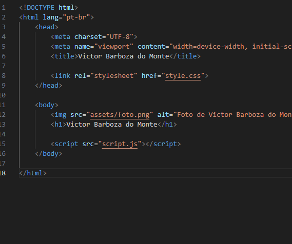

Capy Cafe
Desenvolvimento de Jogos
Desenvolvimento e design de Jogos
Engenharia de Dados
Construindo pipelines e plataformas de dados confiáveis
ETL Pipelines
Fluxos de ingestão e processamento
Data Sources
Transform
Load
Arquitetura de Data Lake
Organização de dados em camadasGold
Silver
Bronze
Raw
Data Quality
Validação e monitoramento
Válido
Inválido
Erro
Automação de Processos
Automatizando fluxos de trabalho e processos repetitivos
Ordens de Compra
Automação do fluxo de compras
Cadastro
Cotação
Requisição
Pedido de Compra
SAP
Oracle
Selenium - WebScraping
Excel
VBA
Processamento de Faturas
Controle e validação de documentos
Invoice
Check
Process
Python
Excel
Relatórios e Acompanhamento
Monitoramento e relatórios automatizados
Data
Process
Report
Excel
Python
Power Query
Fluxos de Trabalho Low-Code
Gestão de processos e design de fluxos de trabalhoForm
Workflow
Done
Pipefy
Tech Stack
Tecnologias e ferramentas com as quais trabalho
Linguagens
Programação e desenvolvimentoGame Development
Desenvolvimento e assetsData & Backend
Dados, APIs e aplicaçõesTools & Infrastructure
Desenvolvimento e deploy
Victor Barboza
Software Engineer • Game Developer